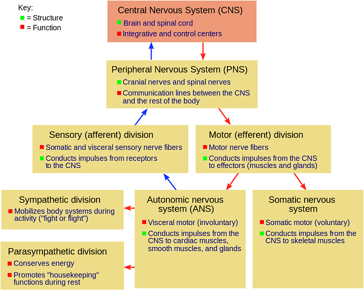

Neurobiology - the science of the brain and its functions.
Our brain is a really strange thing, whose workings we haven't completely understood yet. The nervous system is a fundamental and intricate network that governs every action, thought, and sensation in the human body. It is often likened to a complex communication system, where various components work in harmony to ensure that the body responds appropriately to internal and external stimuli.
The main functions of our nervous system are:
1. Provide rapid communication between your body and your brain.
2. Receiving and perceiving special sensations (taste, smell, vision, sounds)
3. Respond and adapt to changes between various organs and the outside environment.
But first, we'll talk about the structure of the human nervous system:
Our nervous system is divided into two parts:
1. Central nervous system:
1) Brain: The brain processes sensory information, aids in cognition, memory, and decision-making, and coordinates complex behaviors.
2) Spinal Cord: The spinal cord acts as a conduit between the brain and the rest of the body. It also handles certain reflexes independently of the brain, enabling quick responses to stimuli.
2. Peripheral nervous system:
It consists of Motor nerves and Sensory nerves. Motor nerves are further divided into the Somatic and Autonomic parts. The Autonomic nervous system of a human consists of the Sympathetic and Parasympathetic divisions.
The Role of the Nervous System in Maintaining Homeostasis
Homeostasis is the process of maintaining stable internal conditions within the body, such as body temperature, blood sugar levels, water-salt balance, and oxygen levels, despite changes in the external environment. The nervous system plays a key role in coordinating and regulating these processes, providing a fast and precise response to changes and ensuring optimal conditions for the body's functioning.